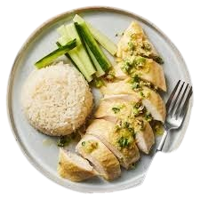

Home
Go To My Fridge

Hainan Chicken Rice Recipe
Ingredients:
1 whole chicken (about 3-4 lbs)
1 tablespoon salt
4-5 slices ginger
2 scallions
3 cups jasmine rice
4 cloves garlic, minced
2 tablespoons chicken fat or vegetable oil
Cucumber slices, for serving
Preparation:
Rub chicken with salt and rinse well. Place in a large pot with ginger and scallions, then cover with water.
Bring to a boil, then simmer gently for 35–40 minutes until cooked through.
Transfer chicken to an ice bath for a few minutes, then pat dry and brush with a little sesame oil if desired.
Reserve the poaching broth for cooking rice and serving as soup.
Cook the Rice:
Rinse jasmine rice until water runs clear. In a pot, heat chicken fat or oil and sauté garlic until fragrant.
Add rice and stir to coat, then pour in enough reserved chicken broth to cook (about 3.5 cups).
Bring to a boil, then cover and simmer on low until rice is fluffy and tender.
Serve:
Slice chicken and arrange on a plate with cucumber slices.
Serve with fragrant rice, a bowl of broth, and dipping sauces like chili, ginger, or soy sauce.
Enjoy your homemade Hainan Chicken Rice, a Southeast Asian classic!